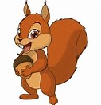
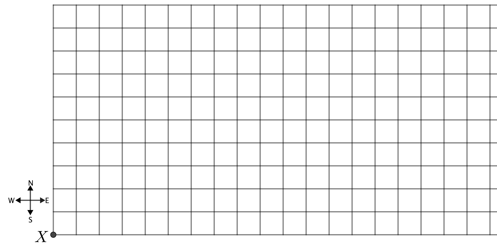
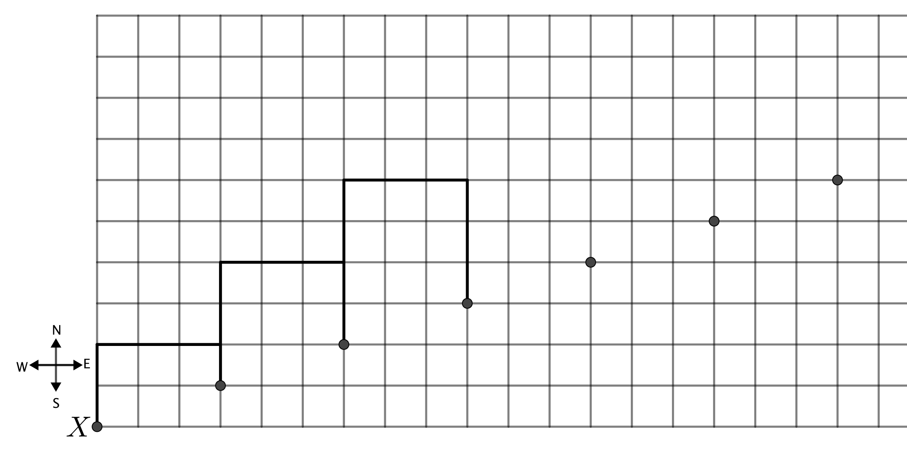

Problem of the Week
Problem B and Solution
Squirrelly Over Nuts
Problem
Squiggles the Squirrel loves nuts. He has to be sure that he has enough for the winter, so he decides to hide a bunch around his yard. He buries them in a special way so that he will be able to find them. A portion of his yard is shown as a grid below.

In hiding the nuts, he uses the following plan. Starting at \(X\) he buries 2 nuts. He will then repeat the following three steps.
He moves 2 m north, 3 m east, and 1 m south, and then buries 3 nuts.
He moves 3 m north, 3 m east, and 2 m south, and then buries 5 nuts.
He moves 4 m north, 3 m east, and 3 m south, and then buries 8 nuts.
On the grid below, mark the positions of Squiggles’ first four hiding spots. Assume each grid line measures 1 m.

Suppose that Squiggles then repeats the three steps, starting from where he last buried nuts. Mark these next three hiding spots on your grid.
Suppose Squiggles repeats the three steps four more times. Use the pattern in the number of buried nuts to find how many nuts will he have hidden in total.
EXTENSION: Examine the points on your grid from part b). Describe how Squiggles could reach his hiding spots with the least amount of running around.
Solution
The grid below shows Squiggles’ first four hiding spots with his path shown in bold lines, and the first repetition of steps 1, 2, and 3 of his plan.

During each repetition of steps 1, 2, and 3, Squiggles buries 3, then 5, then 8 nuts. Thus, with each repetition, he buries \(3+5+8=16\) nuts. Since there are six repetitions in total, plus the 2 nuts he buried at \(X\), he will have hidden a total of \[6 \times 16 + 2 = 96 + 2 = 98 \text{ nuts}\]
EXTENSION: The grid below reveals that Squiggles’ nuts are buried at points along the straight line (dotted) which, in effect, follows the pattern for every one square north it goes three squares east. Since the shortest distance between two points is along a straight line, he could save a lot of time and energy by just moving along this line and hiding his nuts at the appropriate points.
(But he’s a squirrel, so he naturally likes to run about erratically!)